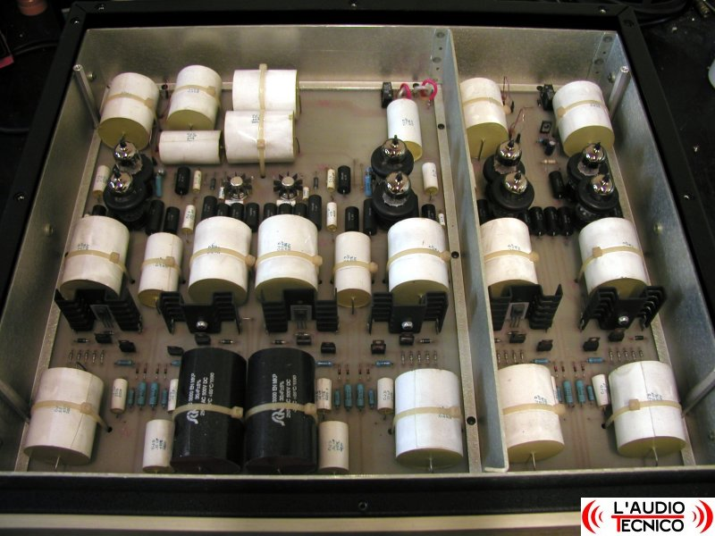

Una politica segreta degli Apple Store dovrebbe premiare gli utenti gentili con riparazioni gratuite | SmartWorld
 smart mobile android SmartWorld Recensioni Offerte Guida all’acquisto Streaming Informatica Tecnologia Domotica Internet Videogiochi Pop Video 2 Tecnologia
Una politica segreta degli Apple Store dovrebbe premiare gli utenti gentili con riparazioni gratuite
Filippo Morgante 18/03/2021 ore 19:43Ci sono alcuni segreti che solo i dipendenti di un’azienda possono conoscere, e quando si parla di Apple tutti vorrebbero sapere quali sono. In un video diventato virale su TikTok , un ex dipendente dell’Apple Store ha rivelato l’esistenza di un programma speciale che i dipendenti potrebbero utilizzare per “ sorprendere e deliziare ” i clienti con ulteriori vantaggi .
LEGGI ANCHE: Guardate cosa c’è di nuovo in Android 12 DP2!
A spiegare il funzionamento di questo presunto programma è stata l’utente di TikTok @Tanicornerstone . Alcuni utenti particolarmente gentili e comprensivi sono stati infatti premiati con delle riparazioni o sostituzioni gratuite anche senza averne il diritto. Ogni membro del personale avrebbe a disposizione uno specifico numero di istanze di “sorpresa e delizia”. I clienti maleducati e arroganti ottengono comunque le riparazioni richieste, ma pagando l’ammontare prestabilito.
“Vedevo un sacco di gente che entrava con telefoni danneggiati dall’acqua per cui non era permessa la sostituzione senza pagare . Tuttavia, i Genius hanno usato il programma ‘sorpresa e delizia’ per essere in grado di fornire la sostituzione gratuita “
@Tanicornerstone
Molti utenti di TikTok ha commentato queste parole confermando di aver beneficiato di questo eccezionale servizio , mentre altri hanno smentito , affermando che si tratta solamente di confusione con altri programmi di assistenza che sono stati poi interrotti.
Via: appleinsider apple Apple Store IvanBottyio una volta avevo portato l’iPhone per sostituire lo schermo, si era leggermente crepato sul bordo. il primo genius mi voleva far pagare la sostituzione ma avrei dovuto lasciarlo lì, quindi rifiutai. tornai qualche giorno dopo e ovviamente trovai un’altro genius e me lo sostituì gratuitamente.
Pedro MartinsAnche io ho avuto una sostituzione gratuita dell’ipad con schermo rotto per una caduta accidentale.
Nuovo iPad Pro ufficiale: tutta la potenza di M1 su un iPad iMac 2021 ufficiali: colorati, grandi ed ovviamente con Apple Silicon | Prezzi Italia Apple TV 4K 2021 ufficiale, adesso con un tocco di iPhone in più | Prezzi Italia PS5 Trova streaming Trova fibra Il tech delle cinque ☕️ mostra altri articoli© 2021 Mondadori Media S.p.A. - via Bianca di Savoia 12 - 20122 Milano - P.IVA 08009080964 - riproduzione riservata
Chi siamo Condizioni d’uso Privacy Privacy Policy Notifiche push Cookie Policy Personalizza tracciamento Vuoi abilitare le notifiche? Attendi…No, grazie Si, attiva